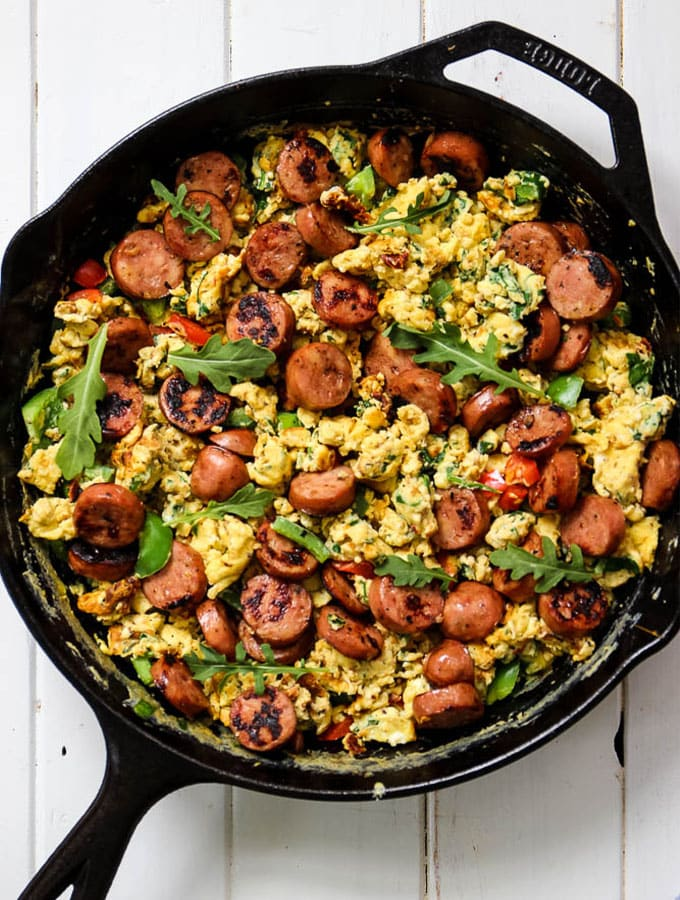

This one skillet Loaded Breakfast Scramble has heaps of spinach, eggs and
sausage to give you the best flavors and nutrients the morning has to offer!
Prep Time:10 minutes
Cook Time:20 Minutes
Serving:5
Ingredients
- 4 'Aidells Chicken and Apple sausages - Sliced to 1/2 in. pieces
- 10 eggs
- 1/4 cup milk
- 1 cup spinach
- 1 bell pepper
- 1 tablespoon sun-dried tomatoes
- 1/2 teaspoon salt
- pinch of cracked pepper
- 1/4 teaspoon red pepper flakes
Steps
-
Heat a cast iron pan over medium heat. Toss in just a pinch of oil if it
needs it. Add the sausage to the pan and sear on each side for 3-5
minutes.
-
In a medium sized bowl, crack the eggs and discard the shells. Add the
milk, salt, pepper, red pepper flakes, sun dried tomatoes, spinach and
bell pepper. Whisk well to combine.
-
Remove the sausage from the pan and place to the side. Pour the egg
mixture into the pan, and begin to break up to egg with a spatula.
Continue cooking and pushing the egg around the pan until there is there
is no more runny and under cooked egg left.
- Add the sausage back to the pan, top with arugula, and serve!
Return to top
Return to main page